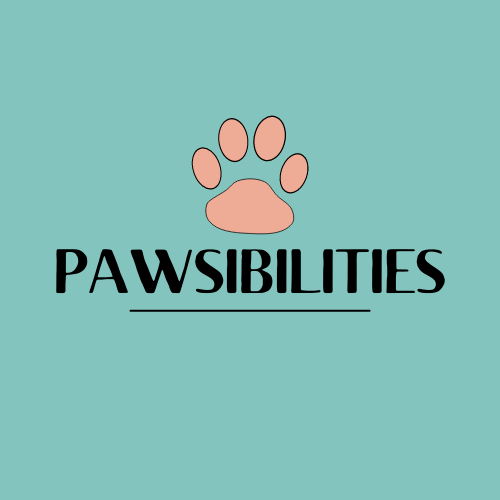

Leadership and Work Experience

Pawsibilities
- Full-Stack Group Project built with React, Redux, SQL, Node, and Express.
- Worked with my team member, Mayra Estrella, to make a dog health tracker where you can register your dog and log their health daily, save important pictures under each day (which is stored using AWS).
- Users can also find local veterinarians, adoption centers, and dog parks, which also shows local weather and forecast for the day.
- Worked on finding and displaying dog parks, veterinarians, and adoption centers with Google Maps API and related React libraries, and displaying weather using Weather API.

MñZ Inc: Movie Travel
- Group Front-End Project built with HTML, CSS, and JavaScript.
- Worked with team members to make an app that uses the IMD8 API to allow the user to search for the filming location of different movies and TV shows so the user could visit the locations while they are traveling<./li>
- When a movie or TV show is searched, the app uses the Google Maps API and a webcam API to show the locations on a map and recent screenshots from webcams at the searched location.
- Worked on HTML and layout for each page, got more experience working with different APIs.

Boredom Buster
- Individual React Project built with React and Redux.
- Application that uses the Wikipedia API where a user can generate a random Wikipedia topic/category to search or search using an already noted topic.
- It then shows up to twenty results of the exact searched term and related articles that the user can read a snippet of, add to a saved-for-later list, or follow the link below the snippet to the full article on Wikipedia.
- Worked on setting up watchlist and search bar with Redux, making layout, and connecting to the Wikipedia API using React